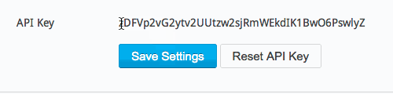
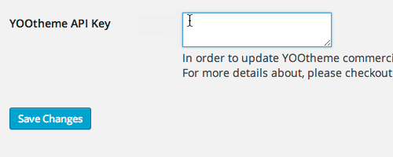
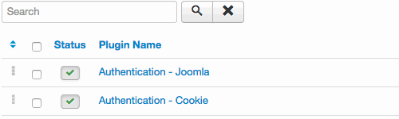
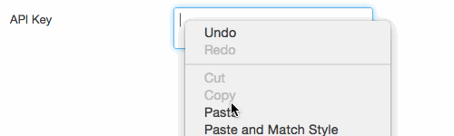

Updating Widgetkit is pretty straightforward. You can use the easy 1-Click Updates from the backend of your website or do a manual update. Just follow these steps:
Widgetkit 2 comes with 1-Click Updates. You'll get notified by WordPress or Joomla and offered the possibility to update with just one click. In order to authenticate yourself while requesting the download without compromising your credentials, we are providing an API Key, which you will find in your YOOtheme account page. It acts on your behalf, so remember to treat it just like a password, don't share it.
To set the API Key in Wordpress go to Settings and click on Widgetkit in the sub menu.
To set the API Key in Joomla open the plugin "Installer - YOOtheme" in the plugin manager.
 
Just download the latest Widgetkit release and update the Widgetkit component using the Joomla Extension Installer. The installation is described in our {doc:install-widgetkit-2 text:Install Widgetkit 2} guide.